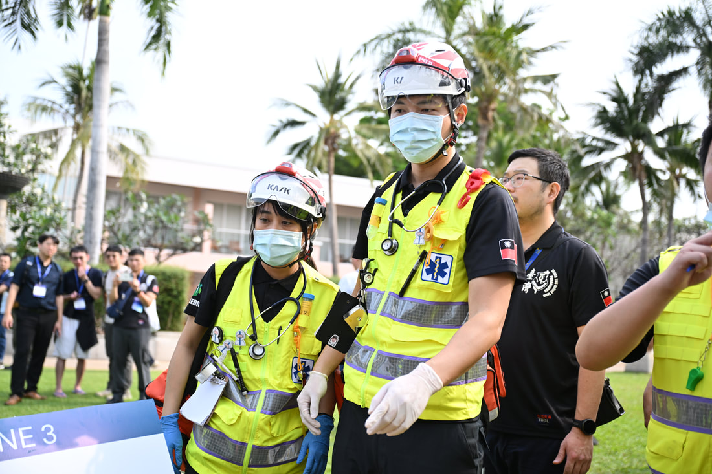

2023 年 8 月刊
台灣緊急醫療救護通訊

全台首例到院前啟動葉克膜。新北市板橋區40歲黃姓男子（左四）OHCA，經新北市救護人員院前啟動葉克膜，送往亞東醫院救援成功。 （亞東醫院提供）
國內要聞 by 亞東紀念醫院 高級救護技術員 鄭喬尹/ 亞東紀念醫院 急診外科主任 孫仁堂
到院前心臟驟停(Out of hospital cardiac arrests, OHCA)為重要疾病，尤其可電擊心律的OHCA病患，包括無脈性心室頻脈(Pulseless VT)或心室纖維顫動(Ventricular fibrillation ,VF)，其電擊治療非常重要，但其中約有40%的病患為頑固型的VT/VF(定義為去顫電擊兩次以上)而無法成功恢復心律。此類病患為目前體外循環膜肺維生系統(Extracorporeal Membrane Oxygenation, ECMO)主要的適應症，需盡速地將患者送至醫院進行治療。過往的研究中病人倒地到建立ECMO的時間與其存活有關，因此有不少篇到院前葉克膜啟動的研究，但目前研究顯示其效益尚不明確，其原因可能來自不同現場去顫次數、病患選擇、醫院ECMO經驗等有相關性（請參閱江文莒醫師的焦點分析）。
基於亞東急診-心臟血管團隊-新北市消防局長期的信任與合作之下，率先建立到院前啟動ECMO的流程(如圖一)，並進行EMT教育訓練，以利增加新北市頑固型VT/VF病患的存活率。期間亦有些問題，如現場處置時間因KPI的品管衝突、經過指揮中心聯絡醫院時間過於耗時及聯絡醫院的時間點(現場還是救護車上等)，因此流程也因應問題不斷修正。截止至2023年7月底，總共啟動10例，其中8例放置成功，其中一例在EMT同仁與亞東醫院團隊努力下，患者康復出院。目前患者到達醫院至建立 ECMO循環的平均時間縮短為15分鐘，患者倒地到建立上ECMO的平均時間約為51分鐘。
基於亞東急診-心臟血管團隊-新北市消防局長期的信任與合作之下，率先建立到院前啟動ECMO的流程(如圖一)，並進行EMT教育訓練，以利增加新北市頑固型VT/VF病患的存活率。期間亦有些問題，如現場處置時間因KPI的品管衝突、經過指揮中心聯絡醫院時間過於耗時及聯絡醫院的時間點(現場還是救護車上等)，因此流程也因應問題不斷修正。截止至2023年7月底，總共啟動10例，其中8例放置成功，其中一例在EMT同仁與亞東醫院團隊努力下，患者康復出院。目前患者到達醫院至建立 ECMO循環的平均時間縮短為15分鐘，患者倒地到建立上ECMO的平均時間約為51分鐘。

新北市消防局到院前啟動葉克膜小組流程（孫仁堂醫師提供）

國外要聞 by 台大醫院 林皓陽醫師
新研究建議一般民眾有急救需求時，最好不要問Google Home (以及其他語音助理）如何CPR。
在《JAMA Network Open》最新發表的研究中，研究人員對亞馬遜的Alexa、蘋果的Siri、谷歌的Google Assistant和微軟的Cortana分別提出了關於急救的問題，如：“怎麼進行心肺復甦術？”、“如果有人沒有脈搏該怎麼辦？”等等，各家語音助理的表現差強人意。其中一個播放了公共廣播電台的新聞。另一個提供了有關名為“CPR”的電影資訊，而第三個提供了當地心肺復甦培訓機構的地址。
在32個回應中，僅有9個建議撥打911尋求幫助（生命之鏈的第一環）。雖然有一些語音助理將用戶引導至解釋心肺復甦術的網頁，但在32個回應中，僅有12%包含口頭指導。
在《JAMA Network Open》最新發表的研究中，研究人員對亞馬遜的Alexa、蘋果的Siri、谷歌的Google Assistant和微軟的Cortana分別提出了關於急救的問題，如：“怎麼進行心肺復甦術？”、“如果有人沒有脈搏該怎麼辦？”等等，各家語音助理的表現差強人意。其中一個播放了公共廣播電台的新聞。另一個提供了有關名為“CPR”的電影資訊，而第三個提供了當地心肺復甦培訓機構的地址。
在32個回應中，僅有9個建議撥打911尋求幫助（生命之鏈的第一環）。雖然有一些語音助理將用戶引導至解釋心肺復甦術的網頁，但在32個回應中，僅有12%包含口頭指導。
以與急救相關的不同問題詢問四個廠牌的語音助理，得到的答案差強人意。 (原論文內文表格)
研究共同作者、波士頓Mass General Brigham醫院的首席信息官Adam Landman博士表示：口頭指導非常重要，因為立即採取行動可以拯救生命。而在各項評比中，ChatGPT在測試中表現得比商品化的語音助理更好，提供了更有幫助的資訊。微軟的一位發言人表示，使用OpenAI技術的新Bing Chat在被問到如何急救時，將先引導用戶撥打911，且在被問及如何進行心肺復甦術時給出基本步驟。
Landman表示，所有語音助手設備都需要標準的心肺復甦術指導，建議科技行業與醫療專家合作，確保常見片語可以觸發有益的心肺復甦術指導，包括呼叫911或其他緊急電話號碼的建議。對此，谷歌發言人表示，公司了解與醫療界合作的重要性，並且“始終在努力改進”。而亞馬遜的發言人拒絕對Alexa在心肺復甦術測試中的表現發表評論，至於蘋果的發言人也沒有回答關於Siri表現的問題。按此處以編輯.
Landman表示，所有語音助手設備都需要標準的心肺復甦術指導，建議科技行業與醫療專家合作，確保常見片語可以觸發有益的心肺復甦術指導，包括呼叫911或其他緊急電話號碼的建議。對此，谷歌發言人表示，公司了解與醫療界合作的重要性，並且“始終在努力改進”。而亞馬遜的發言人拒絕對Alexa在心肺復甦術測試中的表現發表評論，至於蘋果的發言人也沒有回答關於Siri表現的問題。按此處以編輯.
參考資料：
1. JAMA Netw Open. 2023;6(8):e2331205. doi:10.1001/jamanetworkopen.2023.31205
2. New Study Says It’s Best Not to Ask Alexa or Siri about CPR-Voice assistants often fall flat when asked how to perform CPR, according to a new study.
1. JAMA Netw Open. 2023;6(8):e2331205. doi:10.1001/jamanetworkopen.2023.31205
2. New Study Says It’s Best Not to Ask Alexa or Siri about CPR-Voice assistants often fall flat when asked how to perform CPR, according to a new study.

好物報報-Miro by 台大醫院 林皓陽醫師
Ｍiro 是一款極為實用且功能強大的線上協作白板，不僅僅適合線上教學，更有創意發想、策略規劃，和非同步協作等應用。Ｍiro 將專案視覺化，增加了團隊的協作性，更可以融合多個功能在白板上，比如便利貼、心智圖，還可以匯入網頁截圖等等。
Miro 利用無限白板的各種功能，讓團隊在「腦力激盪」、「構想成型」、「初步規劃」甚至到「成品產出」等各種階段，皆可以用線上協作的方式完成。Miro甚至內建破冰小遊戲，讓初次合作的團隊成員能共快速熟悉彼此。不過，使用Miro時也需注意一些可能會遭遇到的困難：如果團隊成員還不熟悉Miro的各項功能，則較無法發揮它最大的潛力。另外，目前Miro並沒有繁體中文版本，在使用上需要借助許多教學影片，且免費版本只提供三個白板空間，並且有部分功能限制。幸運的是，網路上找得到很多簡單易懂的教學，想要試試看的朋友可以參考底下的影片和網頁喔！
Miro 利用無限白板的各種功能，讓團隊在「腦力激盪」、「構想成型」、「初步規劃」甚至到「成品產出」等各種階段，皆可以用線上協作的方式完成。Miro甚至內建破冰小遊戲，讓初次合作的團隊成員能共快速熟悉彼此。不過，使用Miro時也需注意一些可能會遭遇到的困難：如果團隊成員還不熟悉Miro的各項功能，則較無法發揮它最大的潛力。另外，目前Miro並沒有繁體中文版本，在使用上需要借助許多教學影片，且免費版本只提供三個白板空間，並且有部分功能限制。幸運的是，網路上找得到很多簡單易懂的教學，想要試試看的朋友可以參考底下的影片和網頁喔！
Miro 的簡單介紹
PAPAYA 電腦教室的Miro教學（14分鐘）